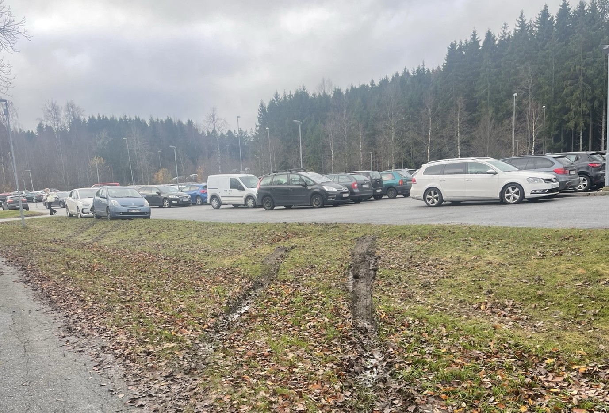
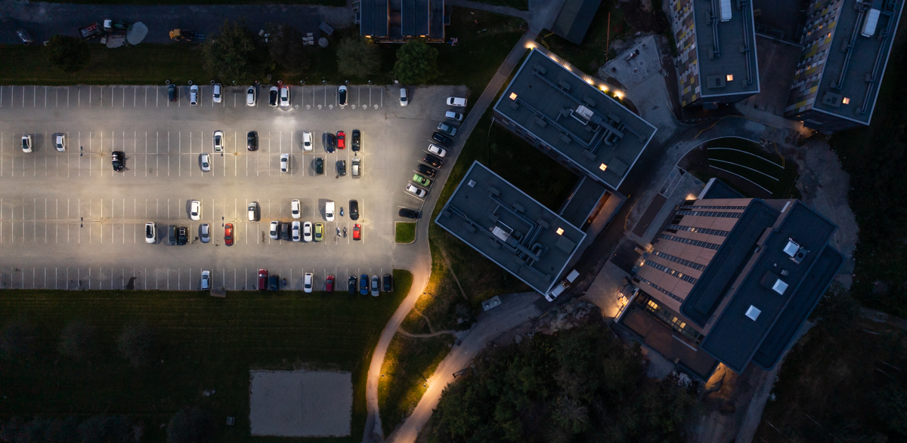

Høgskolen i Østfold, avdeling Halden har lenge tilbudt gratis parkeringsplasser til sine studenter, men ved starten av høstsemesteret 2024 ser det ut som kapasiteten har nådd bristepunktet. Studenter melder om parkeringsplasser som fylles opp rekordtidlig, og mange må kjøre rundt i håp om å finne en ledig parkeringsplass.

Fullstappet parkering ved Høgskolen i Østfold.
Foto: Chelsea Mihaylova
Høgskolen har omtrent 700 parkeringsplasser, men det er langt fra nok til å dekke behovet. Disse parkeringsplassene skal dekke studentene, beboerne på remmen og de ansatte på høgskolen, og det rekker ikke. Flere av studentene har måttet parkere utenfor de merkede områdene, noe som har ført til kaos. Som et svar på det økende presset har Høgskolen sendt ut en e-post med strenge advarsler mot feilparkeringer til sine studenter. I meldingen står det:
«For å sikre ryddig parkering uten innestenging og ødelagte grøntarealer, har det vist seg helt nødvendig å ha kontroll på korrekt parkering, dvs. ALLE HJUL INNENFOR 2 STRIPER PÅ OPPMERKEDE FELT. Feilparkering eller manglende synlig reservert-kort eller billett, vil medføre bøtlegging, p.t. kr. 500, som tilfaller kommunens parkeringsetat for drift av kontrollarbeidet, ikke til HiØ. Ved ekstreme tilfeller av feilparkering kan borttauing bli aktuelt uten varsel, for bileiers regning».

Ekstra parkeringsfelt, like fullt som hovedparkeringen.
Foto: Astrit Queremi
Flere av studentene og beboere på remmen har uttrykt frustrasjon over problemet. «det er håpløst å finne en plass og nå risikerer vi bøter også om vi ikke følger reglene helt nøyaktig,» sier en student og beboer på remmen. Flere av studentene mener at løsningen ikke er strengere regler, men flere parkeringsplasser.

parkeringsfelt,
Fotograf : stein.uvfoto@gmail.com
Høgskolen har enda ikke kommet med noen planer om å utvide parkeringsplassen, men heller kommet med andre alternativer, som ble tidligere nevnt i e-posten de sendte ut til sine studenter tidligere i semesteret.